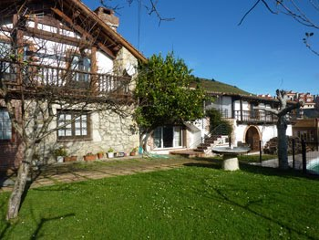

<table border=1  background="bandera.jpg" width="100%">
<tr>
<td colspan="2">
	<center>
		<font color="green" size=4>
		<h1> MORTERA </h1>
		<h2> HOGAR DE MORTERA </h2>
	</center>
	
</td>
</tr>
<tr>
<td>
		
		</td>
		<td> Mortera es uno de los lugares menos inhóspitos de Cantabria, debido a su escasez de poder ecónomico, porque su economia se basa en las vacas, las cuales son escasas <br/>
			
			</td>
		</tr>
		
</table>
